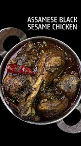

chicken curries from East India feature such unique ingredients. And this Assamese black sesame chicken curry, also known as til diya murghi mangxo, is the perfect example of that. As the name suggests, the star ingredient of this dish is til or black sesame seeds. Sesame seeds are toasted to perfection, blended to a powder, and then used to coat the chicken pieces. The result is a dish that’s spicy, nutty, smokey and so flavorful! Let’s make Sunday chicken curry more interesting!
Original Recipe From-